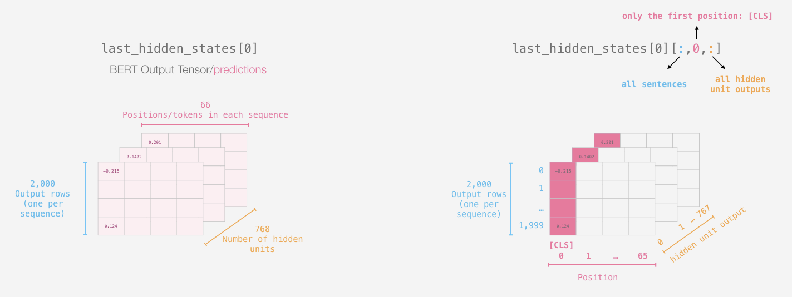
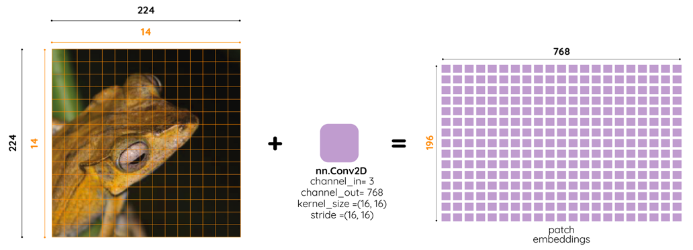
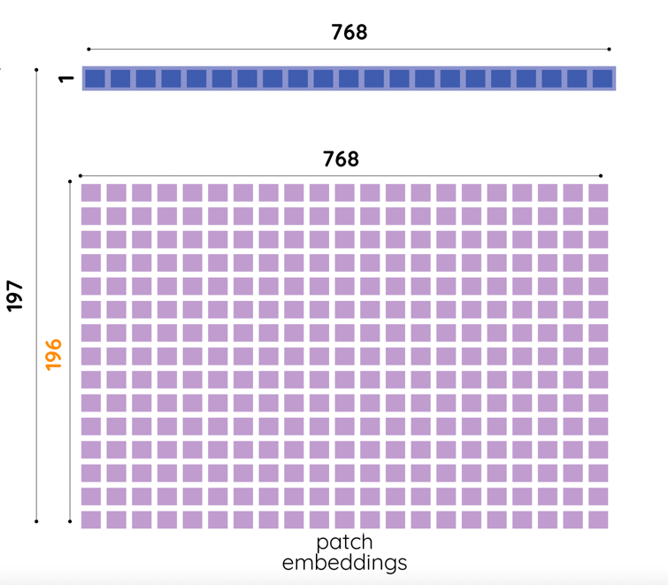
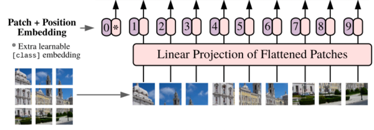
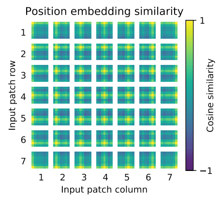
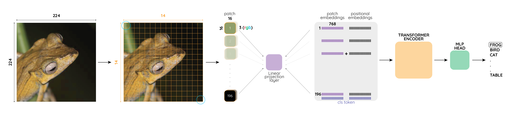
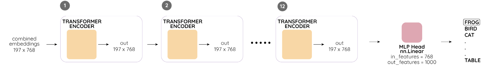
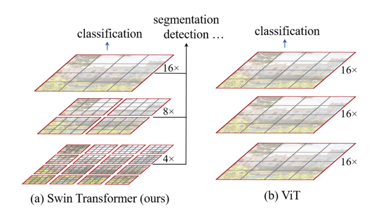

AN IMAGE IS WORTH 16X16 WORDS
TRANSFORMERS FOR IMAGE RECOGNITION AT SCALE
Piotr MazurekPresentation plan
- Overview
- A brief history of transformers
- Why using transformers for CV is complicated?
- How Vision Transformer (ViT) works?
- ViT performance in image classification
- Critics, impact, and my predictions (the fun part)
Assumptions
- You know (the basics of) PyTorch
- You understand the Transformer concept
- You know (more less) how BERT works ([CLS] token)
Overview

Source: lucidrains/vit-pytorch
Overview
- Divide an input image into 196 (14x14) small images of size (16x16)
- Treat it as embedding in NLP
- Use it as an input for traditional transformer encoder (like in BERT)
- Use 12 transformer layers (Norm, Multi-head attention, etc.)
- Take the last output, use it as input for Dense Layer with 1000 classes
- Voilà - you have a classification model
Attention is all you need

Source: Attention Is All You Need
Vaswani et al. 2017
Transformer Encoder

encoder_layer = nn.TransformerEncoderLayer(d_model=512,
nhead=8)
transformer_encoder = nn.TransformerEncoder(encoder_layer,
num_layers=6)
BERT
Source: A Visual Guide to Using BERT for the First Time
Alammar 2020
Why don't we use a full image for transformer?
Because complexity
We need to store $n^2$ parameters
$(3*224*224)^2 = 22\: billion\: parameters$
Self Attention
Query, Value, Key
$\text{Attention}(Q, K, V) = \text{softmax}(\frac{QK^T}{\sqrt{d_k}})V$
For an input sequence of size $n$ tokens in sequence with $d$ embedding size
- $Q$ size: $(n,d)$
- $K^T$ size: $(d)$
- $Q$ size: $(n,d)$
- $QK^T$: $n^2$ complexity
- $softmax$: $n^2$ complexity
- $(QK^T)V$ $n^2$ complexity
Architecture recap

Source: Vision transformer paper
Dosovitskiy et al. 2020
Patch embeddings
Image of size $(3, 224, 224)$
Divided into $196\: (14 \times 14)$ patches of size $3 \times 16 \times 16$
D16*14 = 224 (original image size)
Patch embeddings
Each patch is converted into a vector of size $3 \times 16 \times 16 = 768$
So after that, we have 196 vectors of size 768, a matrix of size $(196, 768)$
Patch embeddings
Source: Committed towards better future
Bukhari 2021
x = torch.randn(1, 3, 224, 224)
# 2D conv
conv = nn.Conv2d(3, 768, 16, 16)
conv(x).reshape(-1, 196).transpose(0,1).shape
>> torch.Size([196, 768])
[CLS] Token
Source: Committed towards better future
Bukhari 2021 Similarly to the situation in BERT we need to add a [CLS] token
[CLS] token is a vector of size $(1, 768)$
The final patch matrix has size $(197, 768)$, 196 from patches and 1 [CLS] token
Transformer encoder recap
We have input embedding - patches matrix of size $(196, 768)$
We still need position embedding
Position embedding
Source: Vision transformer paper
Dosovitskiy et al. 2020
"We use standard learnable 1D position embeddings and the resulting sequence of embedding vectors serves as input to the encoder"
Position embedding similarities
Source: Vision transformer paper
Dosovitskiy et al. 2020
Vision Transformer put together
Source: Committed towards better future
Bukhari 2021
Transformer layers
Source: Committed towards better future
Bukhari 2021
End-to-end training
class ViT(pl.LightningModule):
def __init__(self, num_transformer_layers, num_classes=1000):
super().__init__()
self.criterion = nn.CrossEntropyLoss()
self.conv_embedding = nn.Conv2d(3, 768, 16, 16)
self.cls_token = nn.Parameter(torch.zeros(1, 1, embed_dim))
encoder_layer = nn.TransformerEncoderLayer(d_model=768, nhead=8)
self.transformer_encoder = nn.TransformerEncoder(encoder_layer, num_layers=num_transformer_layers)
self.mlp_head = nn.Linear(768, num_classes)
self.position_embedding_layer = nn.Embedding(197, 768)
def forward(self, x):
batch_size = x.shape[0]
cls_tokens = self.cls_token.expand(batch_size, -1, -1)
#(batch_size, 196, 768)
patches_embedding = self.conv_embedding(x).reshape(-1, 196).transpose(0,1)
#(batch_size, 197, 768)
patches_embedding = torch.cat((cls_tokens, patches_embedding), dim=1)
#(batch_size, 196); 0, 0, ... 196, 196
positions = self._assign_positions_to_patches(
#(batch_size, 197, 768)
position_embedding = position_embedding_layer(positions)
#(batch_size, 197, 768)
final_embedding = patches_embedding + position_embedding
#(batch_size, 197, 768)
embedding_output = self.transformer_encoder(final_embedding)
#(batch_size, 768)
cls_vector = embedding_output[:, 0, :]
#(batch_size, num_classes)
return mlp_head(cls_vector)
def training_step(self, batch, batch_idx):
x, y = batch
logits = self.forward(x)
loss = self.criterion(logits, y)
return loss
How good is ViT performance?
TL; DR
- Worse than Resnet when trained just on ImageNet
- Performance improved when pre-trained on big (and I mean it) dataset
- Pretrained outperforms much bigger CNNs
Rule of thumb
Are you?
- A FAANG company
- A research lab with a budget equal to the GDP of a developing country
ViT may be for you
Otherwise use EfficientNet, It is fine
It takes 2.5k TPUv3 core days to train the best ViT model At around USD 0.5 per core TPU/h, 2.5k*0.5*24h=USD 30,000Critics
- Better results - only with more data
- The cost of training from scratch is ridiculously high (30k$)
- Is it really that different from Convolutions?
Paper's impact
New punchline: Is worth
An Image is Worth 16x16 Words, What is a Video Worth?A Video Is Worth Three Views: Trigeminal Transformers for Video-based Person Re-identification
Paper's impact
First time transformers outperform CNNs in CV2021 - Year of transformers in CV?
Paper's impact
Already new, similar architectures have emerged Source: Swin Transformer: Hierarchical Vision Transformer using Shifted Windows
Liu et al. 2021
Prediction #1
Transformers originally were seq2seq models, using ViT as a tool for captioning images is a "no-brainier"
Prediction #2
BERT like embedding for images - prototyping CV models drastically accelerated
Prediction #3
EVEN bigger models - even better image classification
Prediction #4
More sophisticated (yet efficient) approach for patches
Thanks
"Feel free to ask any question"
Piotr Mazurek
tugot17.github.io/Vision-Transformer-Presentation/